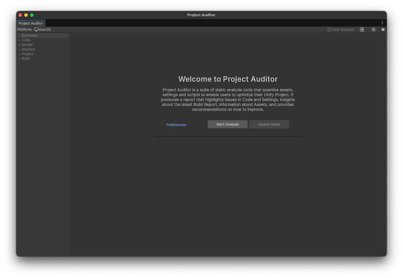
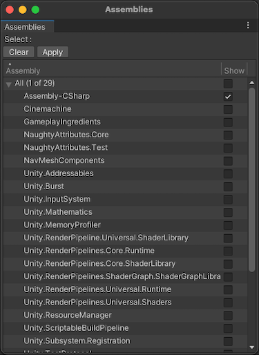

To open the Project Auditor window, go to Window > Analysis > Project Auditor. When you open the window for the first time, it opens on the Welcome screen.

The Project Auditor window has a toolbarA row of buttons and basic controls at the top of the Unity Editor that allows you to interact with the Editor in various ways (e.g. scaling, translation). More info
See in Glossary with the following buttons:
| Value | Description |
|---|---|
| ⟳ New Analysis | Discards the current report. The window then resets to the Welcome view to perform a new analysis. |
| Load (square and arrow) | Load a report from a saved file. |
| Save (disk icon) | Save a report to a .projectauditor file. |
The panel on the left of the Project Auditor window contains a list of project areas which foldout. Once you have analyzed your project, the foldouts on the left of the window populate with data. The project areas are as follows:
| View | Description |
|---|---|
| Summary | Contains high-level information about the issues and insights Project Auditor found in your project,and about the analysis session and project itself. For more information, refer to Summary view reference. |
| Code | A list of issues that affect performance, memory usage, Editor iteration times, and other areas related to the code in your project. For more information, refer to Code view reference |
| Assets | A list of assets with import settings or file organization that impacts startup times, runtime memory usage, or performance. For more information, refer to Assets view reference. |
| ShadersA program that runs on the GPU. More info See in Glossary |
A list of shaders in your project, and any issues or compiler errors related to them. For more information, refer to Shaders view reference. |
| Project | A list of problems that might affect performance, memory, and other areas related to the settings in your project. For more information, refer to Project view reference. |
| Build | How long each step of the last clean build took, and the assets included in it. For more information, refer to Build view reference. |
Most Project Area views allow you to filter the data to areas that you want to focus on in the Filters panel. The following filter options are available:
| Value | Description |
|---|---|
| Assembly (only available in some code-related Project Area views) | Display code issues according to what assembly they were found in. The Select button opens an Assembly window where you can enable the assemblies you’re interested in. |
| Areas (only available in some Project Area views) | Filter results by specific areas. The Select button opens an Areas window where you can enable the areas you’re interested in. |
| Search | Filter the table with a string search. Type a search string into the text box and press return to display items that contain the search string. |
| Show (only available in some Project Area views) | Filter the results by issue type. Some views allow you to filter issues by severity. Enable or disable the checkboxes to include these issues. |

Each table contains the following controls so you can adjust how Project Auditor displays the issues:
| Control | Description |
|---|---|
| Analyze Now (⟳) | Re-run the analysis for this Project Area. |
| Show/Hide Hierarchy | Enable to display the table as a hierarchy according to the Group By dropdown. |
| Group By (only available when Show Hierarchy is enabled) | Select how to group the issues in the table. |
| Collapse All (only available when Show Hierarchy is enabled) | Collapse all expanded groups. |
| Expand All (only available when Show Hierarchy is enabled) | Expand all groups. |
| Export | Export the issues in the table to a comma-separated value (.csv) file. Choose from the following options:
|